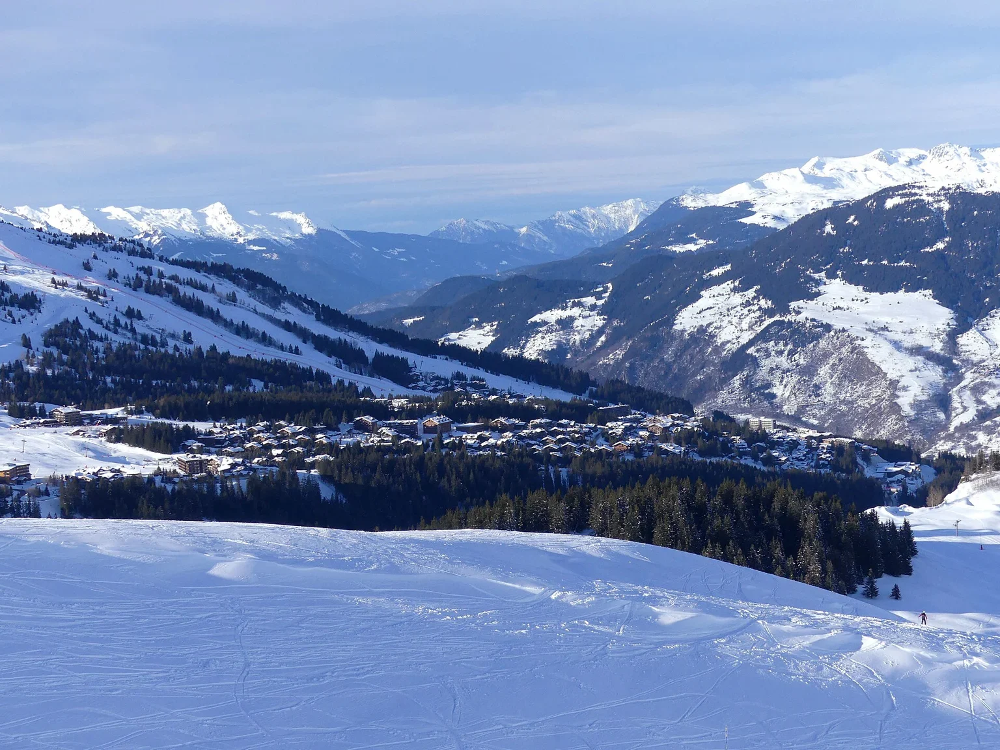

Savoie, French Alps, France
Courchevel 1850
The named hotel selection is in 1850. Compare the immediate Bellecôte slopes, Jardin Alpin and the quieter Chenus edge, rather than treating every address as the same setting.
Savoie, French Alps, France
Bellecôte mornings, Jardin Alpin retreats and a lunch worth pausing for. Choose the house and the rhythm, then let the details follow.
Your preferences. Thoughtful options. Personal attention throughout.

Savoie, French Alps, France
The named hotel selection is in 1850. Compare the immediate Bellecôte slopes, Jardin Alpin and the quieter Chenus edge, rather than treating every address as the same setting.
Savoie, French Alps, France
Moriond, Village, Le Praz, La Tania and Saint-Bon have different settings and mountain connections. Share your preferred pace before choosing a chalet; lift access and an evening return need their own plan.
A few considered examples. Your personal selection extends beyond these pages, with stays and privileges chosen around your preferences.
Courchevel 1850, France
Announced opening · confirm for your dates
For an announced new slope-side option; choose with the opening status clearly understood.
Once the opening is confirmed, imagine a morning beginning in 1850 with equipment and instruction already arranged. A mountain lunch can leave the afternoon free for another run or a return to the hotel’s announced spa. Later, Simonetta could provide a different Italian evening from the familiar Alpine table. The planned interiors suggest a more contemporary mood than a traditional mountain house. Establish the actual opening and the services operating for your dates first, then decide whether that new chapter suits the way you want to stay.
Before choosing
Announced for December 2026; opening day and reservations must be confirmed. Formerly Hôtel des 3 Vallées.
A different choice
Saint Roch is another announced 2026 opening, while established houses offer a longer operating history.
Details checked · 26 Oct 2026
Courchevel 1850, France
Announced opening · confirm for your dates
An announced reopening to consider alongside established hotels, subject to final confirmation.
Plan the stay around the confirmed opening before imagining the first morning on Bellecôte. Equipment and instruction can be organised for the group, with a lunch that allows beginners and confident skiers to meet again. A companion might spend the afternoon at the announced indoor pool or with a Tata Harper treatment rather than extending the ski day. Come together before dinner without requiring everyone to keep the same pace. The new house’s appeal depends on the actual room and facilities operating for your dates.
Before choosing
Opening announced for 18 December 2026; confirm that the opening and your services are operating before travel.
A different choice
Compare the newly announced house with an established Bellecôte hotel around your exact dates.
Details checked · 26 Oct 2026
Jardin Alpin, Courchevel 1850, Savoie, France
A richly decorated Alpine house with direct skiing from the Jardin Alpin setting.
Who it suits
Ornate slope-side hotel
Begin with the ski room rather than a transfer across the resort. An instructor can take the beginners while more experienced skiers leave for a longer route, meeting later over a mountain lunch. Return before the afternoon feels rushed and leave time to enjoy the house itself. A hotel dinner can keep everyone together; another evening might belong to Courchevel’s livelier tables. Choose a chalet instead when the group would rather have its own sitting room and an evening at home.
Getting there & getting around
Road arrival to Courchevel 1850; direct ski access follows piste operation.
Before choosing
Winter 2026 reopening is announced; confirm the operating dates, chosen accommodation and any included services.
A different choice
Cheval Blanc offers a smaller, more contemporary alternative.
Details checked · 26 Oct 2026
Jardin Alpin, Courchevel 1850, Savoie, France
A small contemporary mountain maison with a restaurant-led evening.
Who it suits
Small contemporary mountain hotel
Give the first morning to the mountain, with the equipment and the meeting point for instruction already settled. Lunch can be a pause on the slopes rather than another transfer. Return for a treatment before an evening reserved around Le 1947, allowing the meal its own time instead of placing it between other plans. On another day, choose a slower start or a village outing. The scale suits a stay where the room, spa and dinner matter as much as the ski mileage.
Getting there & getting around
Road arrival to Jardin Alpin; confirm the piste route for the group.
Before choosing
Published season: 4 December 2026–3 April 2027. Restaurant and treatment reservations are separate requests.
A different choice
Les Airelles offers more ornate interiors and a different family atmosphere.
Details checked · 26 Oct 2026
Jardin Alpin, Courchevel 1850, Savoie, France
A residential mountain atmosphere with family configurations and a distinctive ski return.
Who it suits
Family-minded hotel & chalets
Start with everyone’s equipment ready, then let the day divide according to ability. A beginner’s lesson and an experienced skier’s mountain route need not compete for the same morning. Gather for lunch before returning to the hotel, where the shared rooms and family accommodation invite a gentler afternoon. A private chalet could make dinner at home the centre of the evening, with chef services discussed for the chosen booking. The house works best when the family layout is considered before the itinerary.
Getting there & getting around
Road arrival to Jardin Alpin; ski return uses the hotel’s published conveyor arrangement.
Before choosing
Confirm the 2026/27 opening calendar directly; older published dates should not be reused. Check chalet services and interconnecting-room confirmation.
A different choice
A smaller maison may suit couples; a private chalet gives a group more separation.
Details checked · 26 Oct 2026
Courchevel 1850, Savoie, France
A chalet-style hotel choice to compare around suite layout and mountain access.
Who it suits
Chalet-style hotel & suites
Choose the accommodation around the people sharing the stay, then build the mountain day from there. A morning of instruction, a guided ski route and a slower hotel afternoon can coexist when meeting points and equipment are already arranged. Come together for dinner after the group has had time to return at its own pace. Discuss the current restaurant programme before choosing a particular evening: a past restaurant name is not a reason to assume the same experience will operate this winter.
Getting there & getting around
Road arrival in 1850; published ski-in, ski-out access.
Before choosing
Confirm the chosen chalet or suite, seasonal operation and restaurant programme. Sarkara is not carried forward as a current restaurant.
A different choice
Le K2 Altitude is a separate hotel, not another name for this property.
Details checked · 26 Oct 2026
310 Rue de Bellecôte, Courchevel 1850, Savoie, France
A restrained slope-side base for guests who favour a quiet return after the mountain.
Who it suits
Quiet slope-side hotel
Watch the first skiers pass Bellecôte before joining them. The advantage of this setting is the simple relationship between the room, ski room and slope: a shorter outing can still leave much of the day for other pleasures. Return for a swim and a treatment, then choose a quiet dinner or a separately reserved table in the village. A group can keep different mountain ambitions without making every return a transport exercise. Confirm the room and its outlook before choosing the exact rhythm.
Getting there & getting around
Road arrival to Bellecôte; slope access depends on piste operation.
Before choosing
Reopening announced for 10 December 2026. Confirm restaurant service and room-specific facilities for the stay.
A different choice
Les Airelles offers a more decorative house; this choice favours restraint.
Details checked · 26 Oct 2026
Courchevel 1850, Savoie, France
A central ski-in, ski-out hotel where the spa and a serious dinner can share the day.
Who it suits
Central hotel with a dining focus
Let the first day be straightforward: a lesson from the hotel’s ski setting, lunch without crossing the resort, and an afternoon in the water. A non-skier can enjoy the spa while the others stay on the mountain, then everyone can meet before dinner. Reserve Stéphane Buron’s table for an evening with time to linger, keeping a simpler meal for another night. A central address makes it easy to include the village without building the whole stay around taxis or long walks in ski boots.
Getting there & getting around
Road access in 1850, with skiing from the hotel when pistes operate.
Before choosing
Confirm winter dates, family facilities and the service calendar of each restaurant.
A different choice
A quieter Jardin Alpin base changes the balance between village life and seclusion.
Details checked · 26 Oct 2026
Bellecôte slope, Courchevel 1850, Savoie, France
The former Hôtel Barrière Les Neiges, now presented under the Fouquet’s collection.
Who it suits
Slope-side hotel with lively dining
Begin on Bellecôte with the day’s instruction or a longer ski route already arranged. A mountain lunch can make the afternoon optional: continue outside, or return to the hotel for the pool. Later, Loulou gives dinner a livelier possibility without requiring another journey across the resort. Families should choose the room connections and children’s arrangements first, then decide which evenings belong together and which can be more independent. The new hotel name matters when reviewing reservations and older recommendations.
Getting there & getting around
Road arrival to Bellecôte; direct skiing is conditional on piste operation.
Before choosing
Current brand: Fouquet’s Courchevel, formerly Hôtel Barrière Les Neiges. Confirm seasonal dates and the booked room’s services.
A different choice
Cheval Blanc gives a smaller restaurant-led stay; compare the actual room and evening preferences.
Details checked · 26 Oct 2026
661 Rue de Bellecôte, Courchevel 1850, Savoie, France
A small Bellecôte address for guests who want skiing close to a quieter hotel scale.
Who it suits
Small Bellecôte hotel
Leave for a morning on Bellecôte, then make lunch the moment when the group decides what comes next. Some may continue skiing while others return to the hotel and take the afternoon slowly. Dinner at Slalom 1850 keeps one evening close to the room; a different night can take you into the village for a livelier table. The hotel’s smaller scale is part of the choice. Confirm the particular room layout and winter restaurant programme instead of relying on older names in a general shortlist.
Getting there & getting around
Road arrival to Bellecôte; plan ski routes around the group’s ability.
Before choosing
Confirm the seasonal hotel and restaurant calendars and the selected room configuration.
A different choice
A central village hotel suits frequent independent outings; Strato favours a quieter return.
Details checked · 26 Oct 2026
Courchevel 1850 centre, Savoie, France
A central, established hotel for a stay that moves easily between skiing and village life.
Who it suits
Central Alpine hotel
Start with the slopes, keeping the possibility of a shorter day open. A central return makes it easy to meet non-skiers for lunch or leave time for the spa before the evening. Dinner might be at La Table du Lana, while another night can turn towards the more intimate mood of Le Saint Nicolas. The piano bar allows the evening to continue without a new transfer. Choose this address for that connection with village life rather than a feeling of being removed from Courchevel.
Getting there & getting around
Central 1850 road arrival and direct skiing when the pistes operate.
Before choosing
Confirm restaurant dates, the exact room category and winter opening.
A different choice
The Jardin Alpin houses give a different, more separated setting.
Details checked · 26 Oct 2026
444 Route des Chenus, Courchevel 1850, Savoie, France
A quieter forest-edge hotel and residence for guests who want room to retreat.
Who it suits
Forest-edge hotel & residence
Let the first morning begin at the edge of the trees, with equipment and instruction arranged for the group. A mountain lunch can be followed by another run or a return to the quieter house. Apartment space makes sense when friends or family want a shared room for the evening rather than several separate hotel doors. Dinner in the village remains an option, with the return already considered. Choose the setting for its calmer atmosphere and confirm the services of the exact accommodation you reserve.
Getting there & getting around
Road arrival via Route des Chenus; piste access depends on the seasonal network.
Before choosing
Confirm apartment layouts, seasonal dining and access requirements; do not assume all residence services match hotel-room bookings.
A different choice
Le Lana prioritises the centre; La Sivolière gives a quieter edge-of-forest setting.
Details checked · 26 Oct 2026
| Property / setting | Style / suggested fit | Main reason to choose it | Accommodation | Facilities | Access / transport | Season / practical considerations |
|---|---|---|---|---|---|---|
| Bourbon Hotel Courchevel 1850, France | For an announced new slope-side option; choose with the opening status clearly understood. | For an announced new slope-side option; choose with the opening status clearly understood. | Announced collection of 31 rooms in the former Hôtel des 3 Vallées. | Contrast-therapy spa is part of the announced programme. | Arrival and local transport planned around the chosen accommodation. | Announced for December 2026; opening day and reservations must be confirmed. Formerly Hôtel des 3 Vallées. |
| Hôtel Saint Roch Courchevel 1850, France | An announced reopening to consider alongside established hotels, subject to final confirmation. | An announced reopening to consider alongside established hotels, subject to final confirmation. | Announced 37-room hotel in Courchevel 1850. | Announced Tata Harper spa, indoor pool, fitness, ski room and children’s club. | Arrival and local transport planned around the chosen accommodation. | Opening announced for 18 December 2026; confirm that the opening and your services are operating before travel. |
| Les Airelles, Courchevel Jardin Alpin, Courchevel 1850, Savoie, France | Ornate slope-side hotel | A richly decorated Alpine house with direct skiing from the Jardin Alpin setting. | Rooms and suites; the layout and outlook are confirmed for the chosen category. | Nineteenth-century Austro-Hungarian references give the interiors a distinctive character. | Road arrival to Courchevel 1850; direct ski access follows piste operation. | Winter 2026 reopening is announced; confirm the operating dates, chosen accommodation and any included services. |
| Cheval Blanc Courchevel Jardin Alpin, Courchevel 1850, Savoie, France | Small contemporary mountain hotel | A small contemporary mountain maison with a restaurant-led evening. | Thirty-six rooms and suites keep the hotel relatively intimate. | The Guerlain spa and Le 1947 à Cheval Blanc offer a separate reason to linger indoors. | Road arrival to Jardin Alpin; confirm the piste route for the group. | Published season: 4 December 2026–3 April 2027. Restaurant and treatment reservations are separate requests. |
| L’Apogée Courchevel Jardin Alpin, Courchevel 1850, Savoie, France | Family-minded hotel & chalets | A residential mountain atmosphere with family configurations and a distinctive ski return. | Interconnecting rooms and private chalets create options for different family groups. | A private conveyor connects the ski return with the ski room. | Road arrival to Jardin Alpin; ski return uses the hotel’s published conveyor arrangement. | Confirm the 2026/27 opening calendar directly; older published dates should not be reused. Check chalet services and interconnecting-room confirmation. |
| Le K2 Palace Courchevel 1850, Savoie, France | Chalet-style hotel & suites | A chalet-style hotel choice to compare around suite layout and mountain access. | Rooms, suites, suite-chalets and separate private chalets. | Goji Spa with indoor pool and thermal facilities; family spaces are supervised by parents. | Road arrival in 1850; published ski-in, ski-out access. | Confirm the chosen chalet or suite, seasonal operation and restaurant programme. Sarkara is not carried forward as a current restaurant. |
| Aman Le Mélézin 310 Rue de Bellecôte, Courchevel 1850, Savoie, France | Quiet slope-side hotel | A restrained slope-side base for guests who favour a quiet return after the mountain. | Rooms and suites offer different outlooks and configurations. | A two-floor spa and indoor pool make the afternoon a substantial part of the stay. | Road arrival to Bellecôte; slope access depends on piste operation. | Reopening announced for 10 December 2026. Confirm restaurant service and room-specific facilities for the stay. |
| Le Chabichou Courchevel 1850, Savoie, France | Central hotel with a dining focus | A central ski-in, ski-out hotel where the spa and a serious dinner can share the day. | Rooms and suites; the layout and outlook are confirmed for the chosen category. | The indoor pool and hydrodynamic spa offer a strong non-skiing alternative. | Road access in 1850, with skiing from the hotel when pistes operate. | Confirm winter dates, family facilities and the service calendar of each restaurant. |
| Fouquet’s Courchevel Bellecôte slope, Courchevel 1850, Savoie, France | Slope-side hotel with lively dining | The former Hôtel Barrière Les Neiges, now presented under the Fouquet’s collection. | Forty-two rooms and suites include twenty suites. | Loulou, an indoor pool and an outdoor jacuzzi add different ways to spend time beyond the pistes. | Road arrival to Bellecôte; direct skiing is conditional on piste operation. | Current brand: Fouquet’s Courchevel, formerly Hôtel Barrière Les Neiges. Confirm seasonal dates and the booked room’s services. |
| Le Strato 661 Rue de Bellecôte, Courchevel 1850, Savoie, France | Small Bellecôte hotel | A small Bellecôte address for guests who want skiing close to a quieter hotel scale. | Its twenty-six rooms and suites offer a smaller scale than many large Alpine resorts. | The hotel occupies the Bellecôte side of 1850. | Road arrival to Bellecôte; plan ski routes around the group’s ability. | Confirm the seasonal hotel and restaurant calendars and the selected room configuration. |
| Le Lana Courchevel 1850 centre, Savoie, France | Central Alpine hotel | A central, established hotel for a stay that moves easily between skiing and village life. | Rooms and suites; the layout and outlook are confirmed for the chosen category. | A Clarins spa and indoor pool give non-skiing hours a place of their own. | Central 1850 road arrival and direct skiing when the pistes operate. | Confirm restaurant dates, the exact room category and winter opening. |
| La Sivolière 444 Route des Chenus, Courchevel 1850, Savoie, France | Forest-edge hotel & residence | A quieter forest-edge hotel and residence for guests who want room to retreat. | Hotel rooms and apartment-style accommodation create different options for families. | The Chenus setting sits at the wooded edge of 1850. | Road arrival via Route des Chenus; piste access depends on the seasonal network. | Confirm apartment layouts, seasonal dining and access requirements; do not assume all residence services match hotel-room bookings. |
Browse Hotels & Private Stays ↗ · Private villas & group stays ↗
A mountain lunch, a quieter table or dinner with music. Choose the mood; we plan the details around you.
22 possibilities, chosen around your pace.
Tell us the atmosphere you have in mind. We will explore other possibilities with you.
Lunch might begin above the village at Bagatelle, with the Chenus descent already planned, or at Loulou after a few Bellecôte runs. Back in the village, Le Coin Savoyard offers a regional table; Le Chabichou gives the meal a quieter, tasting-led direction.
For a different mood, SALTO turns towards the Italian Alps, while Le Café’s piano-bar identity or La Mangeoire’s music can make dinner the main event. Choose the confirmed programme, the table and the pace you prefer. Some evenings should simply end with the last course.
Explore by cuisine & occasion ↗
One reservation or every evening of your stay. A wider world of possibilities, shared personally and arranged around you.
Tell us when you will be here. We will share occasions and experiences to shape your time around.
Browse Events & Experiences ↗Wake close to the skiing, with boots, equipment and the morning’s meeting point already considered. Beginners can have their own lesson while confident skiers explore a longer route; a non-skier can keep the morning for the village or a treatment.
Meet for lunch in the setting that suits the day. A Chenus mountain table and an 1850 village restaurant are different choices, particularly when someone is joining on foot. Leave the return comfortable enough for an afternoon swim, another run or simply an hour beside the window.
An evening at Le Chabichou or Le 1947 can stand on its own. Another night might favour a livelier village dinner, or a chef at the chalet while everyone settles into their own pace. The point is to make the choices fit together without making everyone follow the same holiday.
Our attention continues beyond the reservation. Contact us 24/7 during your stay, including for a change of plan or a spontaneous idea. We explore suitable options and confirm the arrangements you choose.
Tell us which setting or property appeals, approximate dates and how many people are travelling. You do not need a complete itinerary.
Begin an EnquiryContact us 24/7. Our team will respond personally; email info@zelrocprive.com whenever it suits you.
A little inspiration—or something already in mind?